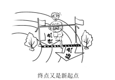

2004 年全国硕士研究生招生考试英语试题
Section I Use of English
Directions:
Read the following text. Choose the best word(s) for each numbered blank and mark A, B, C or D on the ANSWER SHEET 1. (10 points)
Many theories concerning the causes of juvenile delinquency (crimes committed by young people) focus either on the individual or on society as the major contributing influence. Theories 1 on the individual suggest that children engage in criminal behavior 2 they were not sufficiently penalized for previous misdeeds or that they have learned criminal behavior through 3 with others. Theories focusing on the role of society suggest that children commit crimes in 4 to their failure to rise above their socioeconomic status, 5 as a rejection of middle-class values.
Most theories of juvenile delinquency have focused on children from disadvantaged families, 6 the fact that children from wealthy homes also commit crimes. The latter may commit crimes 7 lack of adequate parental control. All theories, however, are tentative and are 8 to criticism.
Changes in the social structure may indirectly 9 juvenile crime rates. For example, changes in the economy that 10 to fewer job opportunities for youth and rising unemployment 11 make gainful employment increasingly difficult to obtain. The resulting discontent may in 12 lead more youths into criminal behavior.
Families have also 13 changes these years. More families consist of one-parent households or two working parents; 14 , children are likely to have less supervision at home 15 was common in the traditional family 16 . This lack of parental supervision is thought to be an influence on juvenile crime rates. Other 17 causes of offensive acts include frustration or failure in school, the increased 18 of drugs and alcohol, and the growing 19 of child abuse and child neglect. All these conditions tend to increase the probability of a child committing a criminal act, 20 a direct causal relationship has not yet been established.
Section II Reading Comprehension
Part A
Directions:
Read the following four texts. Answer the questions below each text by choosing A, B, C or D. Mark your answers on ANSWER SHEET 1. (40 points)
Text 1
Hunting for a job late last year, lawyer Gant Redmon stumbled across CareerBuilder, a job database on the Internet. He searched it with no success but was attracted by the site’s “personal search agent”. It’s an interactive feature that lets visitors key in job criteria such as location, title, and salary, then E-mails them when a matching position is posted in the database. Redmon chose the keywords legal, intellectual property and Washington, D. C. Three weeks later, he got his first notification of an opening. “I struck gold,” says Redmon, who E-mailed his resume to the employer and won a position as in-house counsel for a company.
With thousands of career-related sites on the Internet, finding promising openings can be time-consuming and inefficient. Search agents reduce the need for repeated visits to the databases. But although a search agent worked for Redmon, career experts see drawbacks. Narrowing your criteria, for example, may work against you: “Every time you answer a question you eliminate a possibility,” says one expert.
For any job search, you should start with a narrow concept — what you think you want to do — then broaden it. “None of these programs do that,” says another expert. “There’s no career counseling implicit in all of this.” Instead, the best strategy is to use the agent as a kind of tip service to keep abreast of jobs in a particular database; when you get E-mail, consider it a reminder to check the database again. “I would not rely on agents for finding everything that is added to a database that might interest me,” says the author of a job-searching guide.
Some sites design their agents to tempt job hunters to return. When CareerSite’s agent sends out messages to those who have signed up for its service, for example, it includes only three potential jobs — those it considers the best matches. There may be more matches in the database; job hunters will have to visit the site again to find them — and they do. “On the day after we send our messages, we see a sharp increase in our traffic,” says Seth Peets, vice president of marketing for CareerSite.
Even those who aren’t hunting for jobs may find search agents worthwhile. Some use them to keep a close watch on the demand for their line of work or gather information on compensation to arm themselves when negotiating for a raise. Although happily employed, Redmon maintains his agent at CareerBuilder. “You always keep your eyes open,” he says. Working with a personal search agent means having another set of eyes looking out for you.
21. How did Redmon find his job?
22. Which of the following can be a disadvantage of search agents?
23. The expression “tip service” (Paragraph 3) most probably means ______
24. Why does CareerSite’s agent offer each job hunter only three job options?
25. Which of the following is true according to the text?
Text 2
Over the past century, all kinds of unfairness and discrimination have been condemned or made illegal. But one insidious form continues to thrive: alphabetism. This, for those as yet unaware of such a disadvantage, refers to discrimination against those whose surnames begin with a letter in the lower half of the alphabet.
It has long been known that a taxi firm called AAAA cars has a big advantage over Zodiac cars when customers thumb through their phone directories. Less well known is the advantage that Adam Abbott has in life over Zoe Zysman. English names are fairly evenly spread between the halves of the alphabet. Yet a suspiciously large number of top people have surnames beginning with letters between A and K.
Thus the American president and vice-president have surnames starting with B and C respectively; and 26 of George Bush’s predecessors (including his father) had surnames in the first half of the alphabet against just 16 in the second half. Even more striking, six of the seven heads of government of the G7 rich countries are alphabetically advantaged (Berlusconi, Blair, Bush, Chirac, Chretien and Koizumi). The world’s three top central bankers (Greenspan, Duisenberg and Hayami) are all close to the top of the alphabet, even if one of them really uses Japanese characters. As are the world’s five richest men (Gates, Buffett, Allen, Ellison and Albrecht).
Can this merely be coincidence? One theory, dreamt up in all the spare time enjoyed by the alphabetically disadvantaged, is that the rot sets in early. At the start of the first year in infant school, teachers seat pupils alphabetically from the front, to make it easier to remember their names. So short-sighted Zysman junior gets stuck in the back row, and is rarely asked the improving questions posed by those insensitive teachers. At the time the alphabetically disadvantaged may think they have had a lucky escape. Yet the result may be worse qualifications, because they get less individual attention, as well as less confidence in speaking publicly.
The humiliation continues. At university graduation ceremonies, the ABCs proudly get their awards first; by the time they reach the Zysmans most people are literally having a ZZZ. Shortlists for job interviews, election ballot papers, lists of conference speakers and attendees: all tend to be drawn up alphabetically, and their recipients lose interest as they plough through them.
26. What does the author intend to illustrate with AAAA cars and Zodiac cars?
27. What can we infer from the first three paragraphs?
28. The 4th paragraph suggests that ______
29. What does the author mean by “most people are literally having a ZZZ” (Paragraph 5)?
30. Which of the following is true according to the text?
Text 3
When it comes to the slowing economy, Ellen Spero isn’t biting her nails just yet. But the 47-year-old manicurist isn’t cutting, filing or polishing as many nails as she’d like to, either. Most of her clients spend $12 to $50 weekly, but last month two longtime customers suddenly stopped showing up. Spero blames the softening economy. “I’m a good economic indicator,” she says. “I provide a service that people can do without when they’re concerned about saving some dollars.” So Spero is downscaling, shopping at middle-brow Dillard’s department store near her suburban Cleveland home, instead of Neiman Marcus. “I don’t know if other clients are going to abandon me, too,” she says.
Even before Alan Greenspan’s admission that America’s red-hot economy is cooling, lots of working folks had already seen signs of the slowdown themselves. From car dealerships to Gap outlets, sales have been lagging for months as shoppers temper their spending. For retailers, who last year took in 24 percent of their revenue between Thanksgiving and Christmas, the cautious approach is coming at a crucial time. Already, experts say, holiday sales are off 7 percent from last year’s pace. But don’t sound any alarms just yet. Consumers seem only mildly concerned, not panicked, and many say they remain optimistic about the economy’s long-term prospects even as they do some modest belt-tightening.
Consumers say they’re not in despair because, despite the dreadful headlines, their own fortunes still feel pretty good. Home prices are holding steady in most regions. In Manhattan, “there’s a new gold rush happening in the $4 million to $10 million range, predominantly fed by Wall Street bonuses,” says broker Barbara Corcoran. In San Francisco, prices are still rising even as frenzied overbidding quiets. “Instead of 20 to 30 offers, now maybe you only get two or three,” says John Tealdi, a Bay Area real-estate broker. And most folks still feel pretty comfortable about their ability to find and keep a job.
Many folks see silver linings to this slowdown. Potential home buyers would cheer for lower interest rates. Employers wouldn’t mind a little fewer bubbles in the job market. Many consumers seem to have been influenced by stock-market swings, which investors now view as a necessary ingredient to a sustained boom. Diners might see an upside, too. Getting a table at Manhattan’s hot new Alain Ducasse restaurant used to be impossible. Not anymore. For that, Greenspan & Co. may still be worth toasting.
31. By “Ellen Spero isn’t biting her nails just yet” (Paragraph 1 ), the author means ______
32. How do the public feel about the current economic situation?
33. When mentioning “the $4 million to $10 million range” (Paragraph 3), the author is
talking about ______
34. Why can many people see “silver linings” to the economic slowdown?
35. To which of the following is the author likely to agree?
Text 4
Americans today don’t place a very high value on intellect. Our heroes are athletes, entertainers, and entrepreneurs, not scholars. Even our schools are where we send our children to get a practical education — not to pursue knowledge for the sake of knowledge. Symptoms of pervasive anti-intellectualism in our schools aren’t difficult to find.
“Schools have always been in a society where practical is more important than intellectual,” says education writer Diane Ravitch. “Schools could be a counterbalance.” Ravitch’s latest book, Left Back: A Century of Failed School Reforms, traces the roots of anti-intellectualism in our schools, concluding they are anything but a counterbalance to the American distaste for intellectual pursuits.
But they could and should be. Encouraging kids to reject the life of the mind leaves them vulnerable to exploitation and control. Without the ability to think critically, to defend their ideas and understand the ideas of others, they cannot fully participate in our democracy. Continuing along this path, says writer Earl Shorris, “We will become a second-rate country. We will have a less civil society.”
“Intellect is resented as a form of power or privilege,” writes historian and professor Richard Hofstadter in Anti-intellectualism in American Life, a Pulitzer-Prize winning book on the roots of anti-intellectualism in US politics, religion, and education. From the beginning of our history, says Hofstadter, our democratic and populist urges have driven us to reject anything that smells of elitism. Practicality, common sense, and native intelligence have been considered more noble qualities than anything you could learn from a book.
Ralph Waldo Emerson and other Transcendentalist philosophers thought schooling and rigorous book learning put unnatural restraints on children: “We are shut up in schools and college recitation rooms for 10 or 15 years and come out at last with a bellyful of words and do not know a thing.” Mark Twain’s Huckleberry Finn exemplified American anti-intellectualism. Its hero avoids being civilized — going to school and learning to read — so he can preserve his innate goodness.
Intellect, according to Hofstadter, is different from native intelligence, a quality we reluctantly admire. Intellect is the critical, creative, and contemplative side of the mind. Intelligence seeks to grasp, manipulate, re-order, and adjust, while intellect examines, ponders, wonders, theorizes, criticizes, and imagines.
School remains a place where intellect is mistrusted. Hofstadter says our country’s educational system is in the grips of people who “joyfully and militantly proclaim their hostility to intellect and their eagerness to identify with children who show the least intellectual promise.”
36. What do American parents expect their children to acquire in school?
37. We can learn from the text that Americans have a history of ______
38. The views of Ravitch and Emerson on schooling are ______
39. Emerson, according to the text, is probably ______
40. What does the author think of intellect?
Part B
Directions:
Read the following text carefully and then translate the underlined segments into Chinese. Your translation should be written clearly on ANSWER SHEET 2. (10 points)
The relation of language and mind has interested philosophers for many centuries. (41)The Greeks assumed that the structure of language had some connection with the process of thought, which took root in Europe long before people realized how diverse languages could be.
Only recently did linguists begin the serious study of languages that were very different from their own. Two anthropologist-linguists, Franz Boas and Edward Sapir, were pioneers in describing many native languages of North and South America during the first half of the twentieth century. (42) We are obliged to them because some of these languages have since vanished, as the peoples who spoke them died out or became assimilated and lost their native languages. Other linguists in the earlier part of this century, however, who were less eager to deal with bizarre data from “exotic” language, were not always so grateful. (43) The newly described languages were often so strikingly different from the well studied languages of Europe and Southeast Asia that some scholars even accused Boas and Sapir of fabricating their data. Native American languages are indeed different, so much so in fact that Navajo could be used by the US military as a code during World War II to send secret messages.
Sapir’s pupil, Benjamin Lee Whorf, continued the study of American Indian languages. (44) Being interested in the relationship of language and thought, Whorf developed the idea that the structure of language determines the structure of habitual thought in a society. He reasoned that because it is easier to formulate certain concepts and not others in a given language, the speakers of that language think along one track and not along another. (45) Whorf came to believe in a sort of linguistic determinism which, in its strongest form, states that language imprisons the mind, and that the grammatical patterns in a language can produce far-reaching consequences for the culture of a society. Later, this idea became to be known as the Sapir-Whorf hypothesis, but this term is somewhat inappropriate. Although both Sapir and Whorf emphasized the diversity of languages, Sapir himself never explicitly supported the notion of linguistic determinism.
Section III Writing
46. Directions:
Study the following drawing carefully and write an essay in which you should
1. describe the drawing,
2. interpret its meaning, and support your view with examples.
You should write about 200 words neatly on ANSWER SHEET 2 (20 points)
